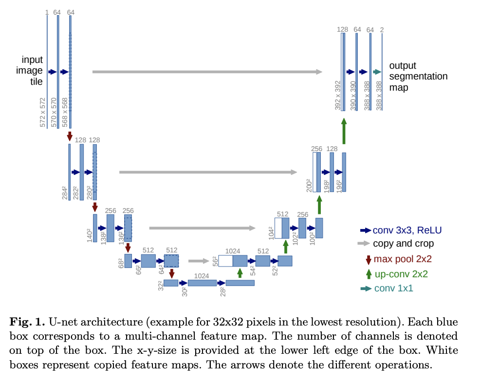

노이즈를 제거하는 확산 확률론적 모델 (DDPM)을 위한 U-Net 모델
이 문서는 노이즈 를 예측하기 위한 U-Net에 기반을 둔 모델을 설명하는 문서입니다.
U-Net 은 U 모양의 모델 다이어그램에서 그 이름을 얻었습니다.

이 구현은 원본 U-net에 많은 변형(잔여 블록, 다중헤드 attention)등을 포함하고 있으며, time-step 임베딩도 포함되어있습니다.
24import math
25from typing import Optional, Tuple, Union, List
26
27import torch
28from torch import nn
29
30from labml_helpers.module import Module33class Swish(Module):40 def forward(self, x):
41 return x * torch.sigmoid(x)에 대한 임베딩
44class TimeEmbedding(nn.Module):n_channels은 embedding안의 차원 개수를 뜻합니다.
49 def __init__(self, n_channels: int):53 super().__init__()
54 self.n_channels = n_channels첫번째 선형 레이어
56 self.lin1 = nn.Linear(self.n_channels // 4, self.n_channels)활성화
58 self.act = Swish()두번째 선형 레이어
60 self.lin2 = nn.Linear(self.n_channels, self.n_channels)62 def forward(self, t: torch.Tensor):72 half_dim = self.n_channels // 8
73 emb = math.log(10_000) / (half_dim - 1)
74 emb = torch.exp(torch.arange(half_dim, device=t.device) * -emb)
75 emb = t[:, None] * emb[None, :]
76 emb = torch.cat((emb.sin(), emb.cos()), dim=1)MLP로 변형하기
79 emb = self.act(self.lin1(emb))
80 emb = self.lin2(emb)83 return emb86class ResidualBlock(Module):in_channels는 input channels의 개수입니다.out_channels는 input channels의 개수입니다.time_channelstime step () 임베딩안에 있는 input channels의 개수입니다.n_groups는 group normalization를 위한 그룹의 개수입니다.dropout은 드롭아웃 비율입니다.
94 def __init__(self, in_channels: int, out_channels: int, time_channels: int,
95 n_groups: int = 32, dropout: float = 0.1):103 super().__init__()그룹 정규화와 첫번째 컨볼루션 레이어
105 self.norm1 = nn.GroupNorm(n_groups, in_channels)
106 self.act1 = Swish()
107 self.conv1 = nn.Conv2d(in_channels, out_channels, kernel_size=(3, 3), padding=(1, 1))그룹 정규화와 두번째 컨볼루션 레이어
110 self.norm2 = nn.GroupNorm(n_groups, out_channels)
111 self.act2 = Swish()
112 self.conv2 = nn.Conv2d(out_channels, out_channels, kernel_size=(3, 3), padding=(1, 1))입력 채널의 수와 출력 채널의 수와 동일하지 않으면 shortcut 연결을 사용해야합니다.
116 if in_channels != out_channels:
117 self.shortcut = nn.Conv2d(in_channels, out_channels, kernel_size=(1, 1))
118 else:
119 self.shortcut = nn.Identity()시간 임베딩을 위한 선형 레이어
122 self.time_emb = nn.Linear(time_channels, out_channels)
123 self.time_act = Swish()
124
125 self.dropout = nn.Dropout(dropout)xhas shape[batch_size, in_channels, height, width]thas shape[batch_size, time_channels]
127 def forward(self, x: torch.Tensor, t: torch.Tensor):첫번째 컨볼루션 레이어
133 h = self.conv1(self.act1(self.norm1(x)))시간 임베딩을 추가하기
135 h += self.time_emb(self.time_act(t))[:, :, None, None]두번째 컨볼루션 레이어
137 h = self.conv2(self.dropout(self.act2(self.norm2(h))))shortcut 연결을 추가하고 반환
140 return h + self.shortcut(x)143class AttentionBlock(Module):n_channels는 입력의 채널의 개수입니다.n_heads는 멀티헤드 attention의 헤드 개수입니다.d_k각각 헤드의 차원의 개수입니다.n_groups는 그룹 정규화의 그룹의 개수입니다.
150 def __init__(self, n_channels: int, n_heads: int = 1, d_k: int = None, n_groups: int = 32):157 super().__init__()기본값 d_k
160 if d_k is None:
161 d_k = n_channels정규화 레이어
163 self.norm = nn.GroupNorm(n_groups, n_channels)쿼리, 키, 값에 대한 projection
165 self.projection = nn.Linear(n_channels, n_heads * d_k * 3)마지막 변형에 대한 선형 레이어
167 self.output = nn.Linear(n_heads * d_k, n_channels)dot-product attention를 위해서 스케일화
169 self.scale = d_k ** -0.5171 self.n_heads = n_heads
172 self.d_k = d_kx는[batch_size, in_channels, height, width] 의 크기를 가집니다.t[batch_size, time_channels]의 크기를 가집니다.
174 def forward(self, x: torch.Tensor, t: Optional[torch.Tensor] = None):t
는 쓰이지 않습니다, 하지만 attention 레이어 function signiture이 ResidualBlock와 일치하기 때문에 arguments에 포함됩니다.
181 _ = t모양을 얻기
183 batch_size, n_channels, height, width = x.shapex
를 모양[batch_size, seq, n_channels]로 바꾸기
185 x = x.view(batch_size, n_channels, -1).permute(0, 2, 1)쿼리, 키, 값들 (concatenated) 그리고[batch_size, seq, n_heads, 3 * d_k]
모양으로 만듭니다.
187 qkv = self.projection(x).view(batch_size, -1, self.n_heads, 3 * self.d_k)쿼리, 키 ,값들로 나누고 각각은 [batch_size, seq, n_heads, d_k]
모양을 가질 것입니다.
189 q, k, v = torch.chunk(qkv, 3, dim=-1)스케일화한 dot-product 를 얻기
191 attn = torch.einsum('bihd,bjhd->bijh', q, k) * self.scale시퀀스 차원을 따라서 softmax 취하기
193 attn = attn.softmax(dim=2)값들끼리 곱하기
195 res = torch.einsum('bijh,bjhd->bihd', attn, v)[batch_size, seq, n_heads * d_k]
로 모양 맞추기
197 res = res.view(batch_size, -1, self.n_heads * self.d_k)[batch_size, seq, n_channels]
로 변형하기
199 res = self.output(res)skip connection 추가하기
202 res += x[batch_size, in_channels, height, width]
로 변형하기
205 res = res.permute(0, 2, 1).view(batch_size, n_channels, height, width)208 return res211class DownBlock(Module):218 def __init__(self, in_channels: int, out_channels: int, time_channels: int, has_attn: bool):
219 super().__init__()
220 self.res = ResidualBlock(in_channels, out_channels, time_channels)
221 if has_attn:
222 self.attn = AttentionBlock(out_channels)
223 else:
224 self.attn = nn.Identity()226 def forward(self, x: torch.Tensor, t: torch.Tensor):
227 x = self.res(x, t)
228 x = self.attn(x)
229 return x232class UpBlock(Module):239 def __init__(self, in_channels: int, out_channels: int, time_channels: int, has_attn: bool):
240 super().__init__()입력은 in_channels + out_channels
채널입니다. 왜냐하면 U-Net의 전반부에서 동일한 해상도의 출력을 연결하기때문입니다.
243 self.res = ResidualBlock(in_channels + out_channels, out_channels, time_channels)
244 if has_attn:
245 self.attn = AttentionBlock(out_channels)
246 else:
247 self.attn = nn.Identity()249 def forward(self, x: torch.Tensor, t: torch.Tensor):
250 x = self.res(x, t)
251 x = self.attn(x)
252 return x중간 블록
이 블록은 ResidualBlock
을 포함하고, AttentionBlock
, 뒤를 이어 또 ResidualBlock
이 있습니다. 이 블록은 U-Net의 최저 해상도로 적용됩니다.
255class MiddleBlock(Module):263 def __init__(self, n_channels: int, time_channels: int):
264 super().__init__()
265 self.res1 = ResidualBlock(n_channels, n_channels, time_channels)
266 self.attn = AttentionBlock(n_channels)
267 self.res2 = ResidualBlock(n_channels, n_channels, time_channels)269 def forward(self, x: torch.Tensor, t: torch.Tensor):
270 x = self.res1(x, t)
271 x = self.attn(x)
272 x = self.res2(x, t)
273 return x로 피처맵을 스케일업하기
276class Upsample(nn.Module):281 def __init__(self, n_channels):
282 super().__init__()
283 self.conv = nn.ConvTranspose2d(n_channels, n_channels, (4, 4), (2, 2), (1, 1))285 def forward(self, x: torch.Tensor, t: torch.Tensor):t
는 쓰이지만, ResidualBlock과 attention 레이어 function signature
이 일치하기 때문에 여전히 논쟁이 있습니다.
288 _ = t
289 return self.conv(x)피처맵을 으로 스케일 다운
292class Downsample(nn.Module):297 def __init__(self, n_channels):
298 super().__init__()
299 self.conv = nn.Conv2d(n_channels, n_channels, (3, 3), (2, 2), (1, 1))301 def forward(self, x: torch.Tensor, t: torch.Tensor):t
는 쓰이지만, ResidualBlock과 attention 레이어 function signature
이 일치하기 때문에 여전히 논쟁이 있습니다.
304 _ = t
305 return self.conv(x)U-Net
308class UNet(Module):image_channels는 이미지의 채널의 개수입니다. RGB로 3채널입니다.n_channels이미지를 변환하는 초기 피쳐 맵의 채널 수입니다.ch_mults는 각 해상도의 채널 번호 목록입니다. 채널의 수는ch_mults[i] * n_channels입니다.is_attn각 해상도에서 주의를 사용할지 여부를 나타내는 불리언 목록입니다.n_blocks는 각 해상도 당UpDownBlocks의 개수입니다.
313 def __init__(self, image_channels: int = 3, n_channels: int = 64,
314 ch_mults: Union[Tuple[int, ...], List[int]] = (1, 2, 2, 4),
315 is_attn: Union[Tuple[bool, ...], List[int]] = (False, False, True, True),
316 n_blocks: int = 2):324 super().__init__()해상도의 개수
327 n_resolutions = len(ch_mults)피처맵에 이미지 투영
330 self.image_proj = nn.Conv2d(image_channels, n_channels, kernel_size=(3, 3), padding=(1, 1))시간 임베딩 레이어. 시간 임베딩은 n_channels * 4
채널을 가지고 있습니다.
333 self.time_emb = TimeEmbedding(n_channels * 4)U-Net 전반부 - 해상도 저하
336 down = []채널의 개수
338 out_channels = in_channels = n_channels각각 해상도
340 for i in range(n_resolutions):각 해상도의 출력 채널 수
342 out_channels = in_channels * ch_mults[i]n_blocks
추가
344 for _ in range(n_blocks):
345 down.append(DownBlock(in_channels, out_channels, n_channels * 4, is_attn[i]))
346 in_channels = out_channels마지막을 제외한 모든 해상도에서 샘플 다운
348 if i < n_resolutions - 1:
349 down.append(Downsample(in_channels))모듈 집합을 결합하기
352 self.down = nn.ModuleList(down)중간 블록
355 self.middle = MiddleBlock(out_channels, n_channels * 4, )U-Net 하반부 - 해상도 향상
358 up = []채널의 개수
360 in_channels = out_channels각각 해상도
362 for i in reversed(range(n_resolutions)):같은 해상도에서의 n_blocks
364 out_channels = in_channels
365 for _ in range(n_blocks):
366 up.append(UpBlock(in_channels, out_channels, n_channels * 4, is_attn[i]))채널 수를 줄이기 위한 최종 블록
368 out_channels = in_channels // ch_mults[i]
369 up.append(UpBlock(in_channels, out_channels, n_channels * 4, is_attn[i]))
370 in_channels = out_channels마지막을 제외한 모든 해상도에서 업샘플링
372 if i > 0:
373 up.append(Upsample(in_channels))모듈 집합을 결합하기
376 self.up = nn.ModuleList(up)최종 정규화 및 컨볼루션 레이어
379 self.norm = nn.GroupNorm(8, n_channels)
380 self.act = Swish()
381 self.final = nn.Conv2d(in_channels, image_channels, kernel_size=(3, 3), padding=(1, 1))x는[batch_size, in_channels, height, width]의 모양을 가집니다.t는[batch_size]의 모양을 가집니다.
383 def forward(self, x: torch.Tensor, t: torch.Tensor):시간 단계별 임베딩 가져오기
390 t = self.time_emb(t)이미지 투영 가져오기
393 x = self.image_proj(x)h
스킵 연결을 위해 각 해상도에 출력을 저장합니다.
396 h = [x]U-Net의 전반부
398 for m in self.down:
399 x = m(x, t)
400 h.append(x)Middle (bottom)
403 x = self.middle(x, t)U-Net의 후반부
406 for m in self.up:
407 if isinstance(m, Upsample):
408 x = m(x, t)
409 else:U-Net의 전반부에서 skip-connection을 가져와 연결합니다
411 s = h.pop()
412 x = torch.cat((x, s), dim=1)414 x = m(x, t)최종 정규화 및 컨볼루션
417 return self.final(self.act(self.norm(x)))